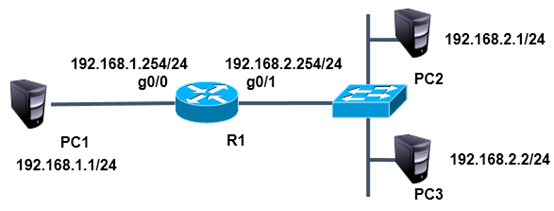
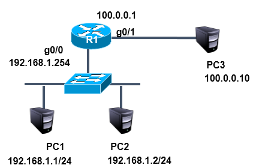

NSD PROJECT1 DAY04
1 案例1：标准ACL的配置（1）
1.1 问题
按照图-1所示拓扑结构，禁止主机pc2与pc1通信，而允许所有其他流量

图-1
1.2 步骤
1，为路由器g0/0接口配置ip 192.168.1.254，为路由器g0/1接口配置ip 192.168.2.254
- Router(config)#interface gigabitEthernet 0/0
- Router(config-if)#ip address 192.168.1.254 255.255.255.0
- Router(config-if)#no shut
- Router(config)#interface gigabitEthernet 0/1
- Router(config-if)#ip address 192.168.2.254 255.255.255.0
- Router(config-if)#no shut
2，为每台pc配置ip与网关
3，使用标准acl限制pc2
- Router(config)#access-list 1 deny 192.168.2.1 0.0.0.0
或
- Router(config)#access-list 1 deny host 192.168.2.1
以上两条配置其中一条即可，效果相同。
4，放行其他数据
- Router(config)#access-list 1 permit any
5，在接口中应用acl
- Router(config)#interface gigabitEthernet 0/1
- Router(config-if)#ip access-group 1 in
2 案例2：标准ACL的配置（2）
2.1 问题
按照图-2所示拓扑结构，允许主机pc2与pc1互通，而禁止其他设备访问pc1
图-2
2.2 步骤
注：此配置需要在案例1的基础上完成
- Router(config)#no access-list 1
- Router(config)#access-list 1 permit 192.168.2.1 0.0.0.0
或
- Router(config)#access-list 1 permit host 192.168.2.1
以上两条配置其中一条即可，效果相同。
3 案例3：扩展访问控制列表
3.1 问题
按照图-3所示拓扑结构，禁止pc2访问pc1的ftp服务，禁止pc3访问pc1的www服务，所有主机的其他服务不受限制

图-3
3.2 步骤
注：此配置需要在案例2的基础上完成
- Router(config)#no access-list 1
- Router(config)#access-list 100 deny tcp host 192.168.2.1 host 192.168.1.1 eq 21
- Router(config)#access-list 100 deny tcp host 192.168.2.2 host 192.168.1.1 eq 80
- Router(config)#access-list 100 permit ip any any
在接口中应用acl
- Router(config)#interface gigabitEthernet 0/1
- Router(config-if)#ip access-group 100 in
4 案例4：配置静态NAT
4.1 问题
按照图-4拓扑图所示，在R1上配置静态NAT使192.168.1.1转换为100.0.0.2,192.168.1.2转换为100.0.0.3，实现外部网络访问

图-4
4.2 步骤
1，首先配置路由器的接口地址
- Router(config)#interface g0/1
- Router(config-if)#ip address 100.0.0.1 255.0.0.0
- Router(config-if)#no shut
- Router(config)#interface g0/0
- Router(config-if)#ip address 192.168.1.254 255.255.255.0
- Router(config-if)#no shut
2，配置静态nat转换
- Router(config)#ip nat inside source static 192.168.1.1 100.0.0.2
- Router(config)#ip nat inside source static 192.168.1.2 100.0.0.3
3，在内部和外部端口上启用NAT
- Router(config)#interface g0/1
- Router(config-if)#ip nat outside
- Router(config)#interface g0/0
- Router(config-if)#ip nat inside
4，为pc配置ip地址与网关，pc3无需配置网关
5 案例5：端口映射
5.1 问题
按照图-5所示拓扑结构，在R1上配置端口映射，将192.168.1.1的80端口映射为100.0.0.2的80端口，将其web服务发布到Internet。
图-5
5.2 步骤
注：此配置需要在练习4的基础上完成
- Router(config)#no ip nat inside source static 192.168.1.1 100.0.0.2
- Router(config)#no ip nat inside source static 192.168.1.2 100.0.0.3
- Router(config)#ip nat inside source static tcp 192.168.1.1 80 100.0.0.2 80
6 案例6：端口多路复用
6.1 问题
按照图-6所示的拓扑结构，在R1上配置PAT端口多路复用使企业内网192.168.1.0/24复用g0/1端口的ip，实现外部网络的访问

图-6
6.2 步骤
注：此配置需要在案例5的基础上完成
- Router(config)#no ip nat inside source static tcp 192.168.1.1 80 100.0.0.2 80
使用acl定义内部ip地址
- Router(config)#access-list 1 permit 192.168.1.0 0.0.0.255
使用pat复用外网接口地址
- Router(config)#ip nat inside source list 1 interface g0/1 overload